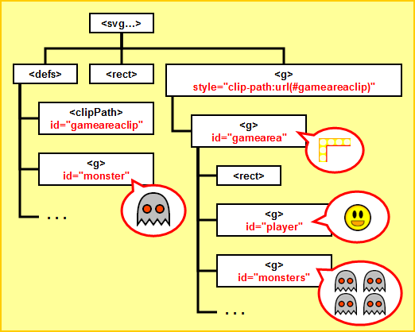
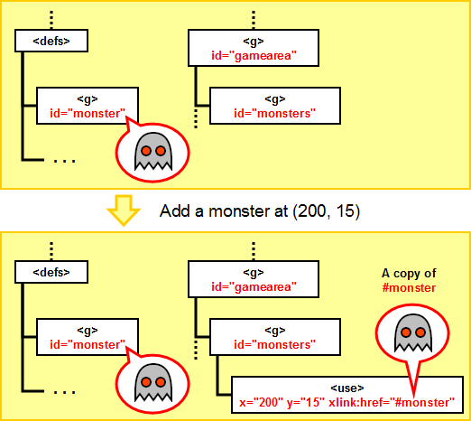
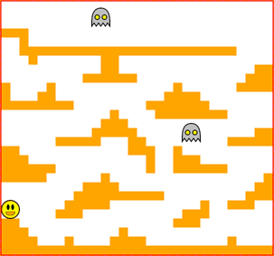
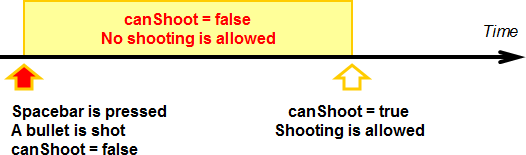
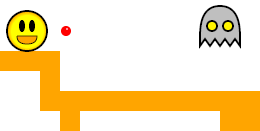
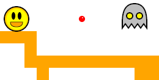
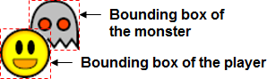
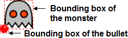

<g id="monster">
<path d="M0,30 q0,-30 20,-30 t20,30 l0,10 continue to the next line...
l-5,-7 l-5,7 l-5,-7 l-5,7 l-5,-7 l-5,7 l-5,-7 l-5,7 l0,-10"
style="fill:gray;fill-opacity:0.5;stroke:black;stroke-width:2"/>
<circle cx="12" cy="20" r="5"
style="fill:yellow;stroke:black;stroke-width:2">
<animateColor attributeName="fill" values="yellow;red;yellow"
dur="1s" repeatCount="indefinite"/>
</circle>
<circle cx="28" cy="20" r="5"
style="fill:yellow;stroke:black;stroke-width:2">
<animateColor attributeName="fill" values="yellow;red;yellow"
dur="1s" repeatCount="indefinite"/>
</circle>
</g>
<g id="gamearea">
. . .
<g id="monsters"/>
. . .
</g>
var monster = svgdoc.createElementNS("http://www.w3.org/2000/svg", "use");
svgdoc.getElementById("monsters").appendChild(monster);

monster.setAttribute("x", 200);
monster.setAttribute("y", 15);
monster.setAttributeNS("http://www.w3.org/1999/xlink", "xlink:href", "#monster");
<use x="200" y="15" xlink:href="#monster"/>
function createMonster(x, y) {
. . .
}

(Click to see the image in original size)
<g id="bullet"> <circle cx="5" cy="5" r="5" style="fill:red"/> <circle cx="6" cy="3" r="1" style="fill:pink"/> </g>
<g id="gamearea">
. . .
<g id="bullets"/>
. . .
</g>
var BULLET_SIZE = new Size(10, 10); // The size of a bullet
var BULLET_SPEED = 10.0; // The speed of a bullet
// = pixels it moves each game loop
var SHOOT_INTERVAL = 200.0; // The period when shooting is disabled
var canShoot = true; // A flag indicating whether the player can shoot a bullet
switch (keyCode) {
...
case 32: // spacebar = shoot
if (canShoot) shootBullet();
break;
...
}

function shootBullet() {
// Disable shooting for a short period of time
. . .
// Create the bullet by createing a use node
. . .
// Calculate and set the position of the bullet
. . .
// Set the href of the use node to the bullet defined in the defs node
. . .
// Append the bullet to the bullet group
. . .
}
setTimeout("canShoot = true", SHOOT_INTERVAL);
|  | ⇨ |  |
function moveBullets() {
// Go through all bullets
var bullets = svgdoc.getElementById("bullets");
for (var i = 0; i < bullets.childNodes.length; i++) {
var node = bullets.childNodes.item(i);
// Update the position of the bullet
. . .
// If the bullet is not inside the screen delete it from the group
. . .
}
}
function collisionDetection() {
// Check whether the player collides with a monster
var monsters = svgdoc.getElementById("monsters");
for (var i = 0; i < monsters.childNodes.length; i++) {
var monster = monsters.childNodes.item(i);
// For each monster check if it overlaps with the player
// if yes, stop the game
. . .
}
// Check whether a bullet hits a monster
var bullets = svgdoc.getElementById("bullets");
for (var i = 0; i < bullets.childNodes.length; i++) {
var bullet = bullets.childNodes.item(i);
// For each bullet check if it overlaps with any monster
// if yes, remove both the monster and the bullet
. . .
}
}


var MONSTER_SIZE = new Size(40, 40); // The size of a monster
{kind=link}